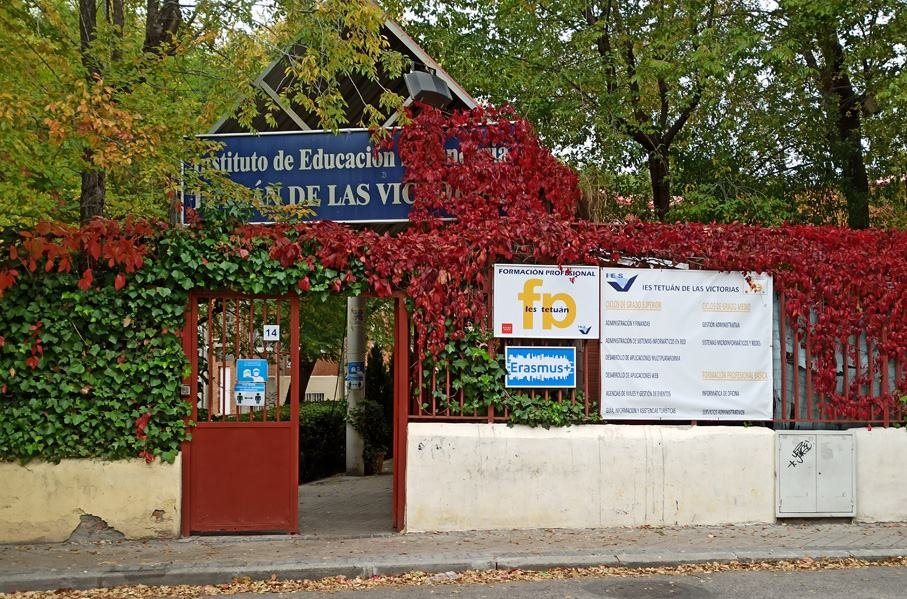
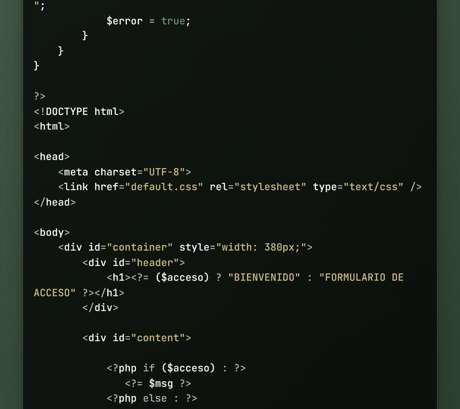
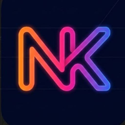

Bienvenidos a mi Instituto.
IES Tetuán de las Victorias

Mi experiencia y trayectoria
Hola, soy Katherine Núñez, actualmente estoy en segundo año de Desarrollo de Aplicaciones Web (DAW) en el IES Tetuán de las Victorias. Durante el primer año he adquirido conocimientos en bases de datos y programación en lenguajes como Java y PHP. Gracias al apoyo académico y a los retos que nos han ido planteando los profesores, siento que estoy construyendo poco a poco mi futuro en el sector tecnológico.

Diseño de mi Favicono
El favicono que he diseñado está compuesto por mis iniciales (Núñez, Katherine). He optado por hacerlo de esta manera porque siento que me identifica; los colores que he usado siento que le dan un toque muy moderno.